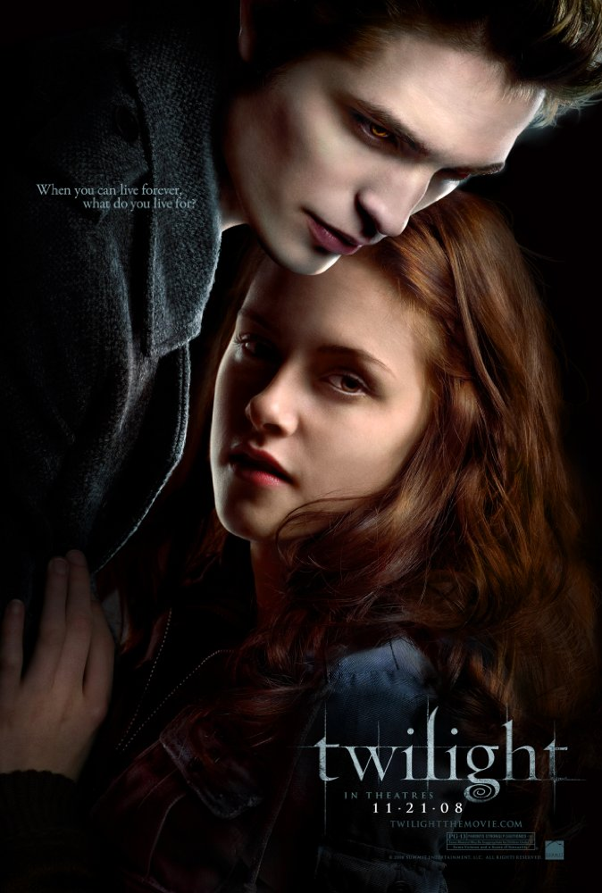
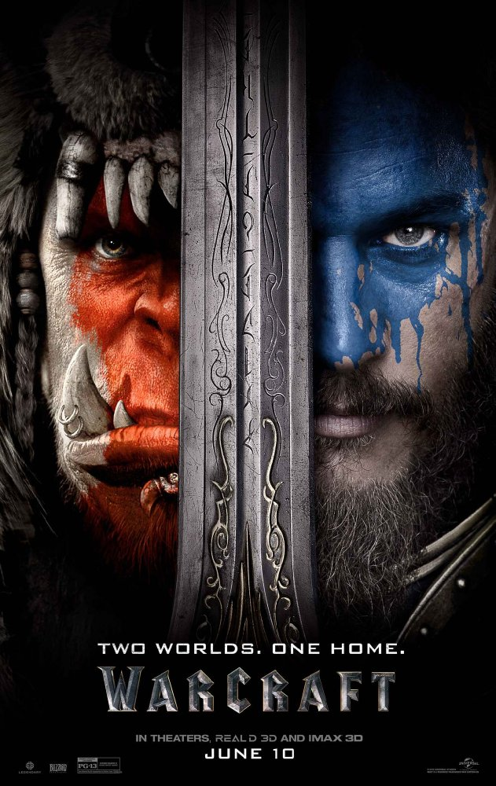

Billy Hope (Jake Gyllenhaal) is an undefeated professional boxer living in New York City with his wife Maureen (Rachel McAdams) and their daughter Leila (Oona Laurence). During a match in which he defends his World Light Heavyweight title, Billy sustains an eye injury and is convinced by Maureen to retire while he's at the top. At a charity event for the orphanage where he and his wife both grew up, Billy is taunted by an up-and-coming boxer, Miguel "Magic" Escobar, leading to a brawl in which Maureen is accidentally shot and killed by Miguel's brother Hector, who flees. Billy begins abusing alcohol and drugs while obsessively searching for Hector. He eventually gets a tip of his whereabouts, but finds only his drug-addict wife Maria (Rita Ora), and leaves after learning Hector is a father. After attacking a referee out of frustration after losing a fight, Billy is suspended and left indebted, leading to his house and belongings being repossessed. He continues to spiral out of control and nearly dies after crashing his car while driving intoxicated, which also causes him to lose custody of Leila, who is put under care of Child Protective Services officer Angela Rivera (Naomie Harris). The incident drives Billy to become sober, but Leila cuts ties with him, blaming him for their predicament. At the behest of friends, Billy gets a job at a gym owned by seasoned boxer, Titus "Tick" Wills (Forest Whitaker), and eventually convinces Tick to become his trainer. Billy's former manager Jordan Mains (50 Cent), who is currently managing Miguel, arranges a fight between the two that could put Billy back in the spotlight. Tick is reluctant to train Billy, fearful he might be blinded by his vendetta against Miguel, but is motivated to do so when another of his students is killed by his abusive father while attempting to defend his mother. Leila is reluctant to forgive her father, but she is allowed to watch the fight by closed circuit in the locker room with Angela. As the match begins, Miguel has the upper hand against Billy, but, with Tick's advice, Billy has the chance to turn the tables in the final round by using the Philly shell defense and countering more aggressively with his left. As the round reaches its final minute, Billy pivots hard and, although fighting from a traditional stance, delivers a powerful left uppercut (southpaw, from which the film takes its title) which sends the champion down to the ground. Miguel manages to get up before the count is over and is saved by the bell. Billy is declared the winner by a split-decision and reunites with Leila in the locker room, where she forgives his past mistakes and they embrace.
Seventeen-year-old Isabella "Bella" Swan moves to Forks, a small town located by Washington's Olympic Peninsula, to live with her father, Charlie, who is the police chief of town. Her mother, Renée, is remarried to a minor league baseball player, and they travel often to attend games. At her new high school, Bella makes several new friends, including Jacob Black, but she is also intrigued by the mysterious and aloof Cullen siblings. Bella sits next to Edward Cullen in biology class on her first day of school, but he seems to be repulsed by her. After a week of absence from school, Edward returns to school, and begins talking to Bella normally. A few days later, Bella is nearly struck by a van in the school parking lot. Edward saves her by instantaneously covering a distance of over thirty feet and putting himself between Bella and the van, stopping it with only his hand and making a conspicuous dent. He subsequently refuses to explain his actions to Bella and warns her against befriending him. After much research, Bella concludes that Edward is seemingly human, but has mysterious powers resembling to a vampire. He eventually confirms this, but says he and the other Cullens only consume animal blood. The pair fall in love, and Edward introduces Bella to his vampire family. Carlisle Cullen, the family patriarch, is a doctor working at the hospital in Forks. His wife is Esme, and Alice, Jasper, Emmett, and Rosalie, are their informally adopted children. Edward and Bella's relationship is soon put in jeopardy, when three nomadic vampires—James, Victoria, and Laurent—arrive in Forks. James, a tracker vampire with incredible hunting instincts, is instantly intrigued by Edward's protectiveness over a human, which incites him to hunt Bella for sport. Edward and the other Cullens risk their lives to protect Bella, but James tracks her to Phoenix, where she is hiding with Jasper and Alice. James lures Bella into a trap by falsely claiming that he is holding her mother hostage. James attacks Bella by biting her wrist, infecting her with vampire venom. After a ferocious battle, Edward subdues James just as the other Cullens arrive. Alice, Emmett, and Jasper kill James, decapitating and burning him, as Edward removes the venom from Bella's wrist, preventing her from turning into a vampire. In the aftermath of the battle, Bella has suffered a broken leg, and ends up in the hospital, but her mother comes in to visit. Upon returning to Forks, Edward accompanies Bella to the high school prom, where he refuses to grant her request that he would transform her into a vampire. As the couple dance, they are unaware that James' mate, Victoria, is secretly watching, plotting revenge for her lover's death.
When the world of the Orcs of Draenor is being destroyed by the evil fel magic that uses life-force, the powerful warlock Gul'dan creates a portal to the world of Azeroth and forms the Horde with members of the Orc clans. He also captures many prisoners to keep the portal open. The king of Azeroth, Llane Wrynn and his brother-in-law, Anduin Lothar are informed by the apprentice of magician Khadgar that he has found fel magic in dead bodies and the king decides to summon the Guardian of Tirisfal, Medivh, to protect his kingdom. Lothar and Khadgar head to Kharazhan to meet Medivh and an ominous shadow points a book out to Khadgar, who takes it and hides. Anduin, Khadgar and Medivh and a group of soldiers are attacked by Orcs and they capture the slave Garona, who is released by King Llane, and she shows them the location of the portal. Garona is contacted by the Orc chief of a clan Durotan that wants to meet King Llane to stop the fel magic. Meanwhile Khadgar learns that the gate was opened with the help of someone in Azeroth. Shall King Llane trust Garona and Durotan, who might be the traitor?
Wade Wilson is a small-time mercenary. He meets Vanessa and falls in love. Life is idyllic until one day he is diagnosed with terminal cancer. Things look bleak but a man appears who says he can be cured, through a treatment that gives him superhero powers. After initially turning him down, Wilson agrees, and meets the man behind the project, Ajax. While undergoing the treatment he discovers that it will involve him becoming a mutant, and he will need to undergo several painful tests to discover what his mutant abilities are. Plus, Ajax is a sadist. The treatment results in Wilson getting powers of accelerated healing but also leaves him terribly disfigured. Ajax tries to keep him a prisoner but he escapes. He now has two aims: find Vanessa and make Ajax pay for what he did to him. Killing Ajax may not be as easy it seems, as Ajax is also a mutant and the meddling superhero Colossus and his sidekick Negasonic Teenage Warhead keep getting in the way. Oh, and Wade Wilson is now operating under an alias: Deadpool.